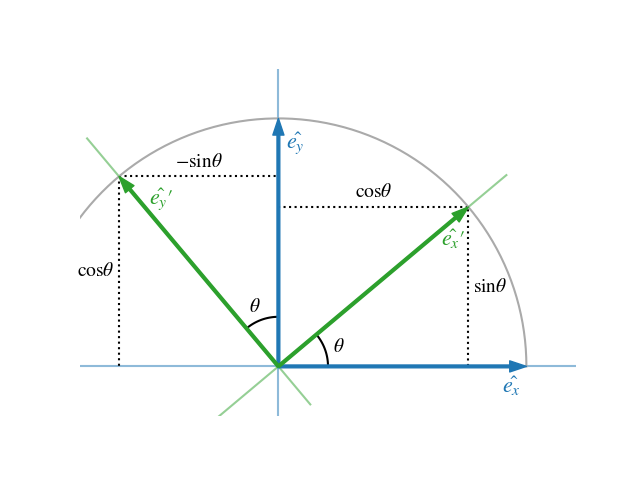
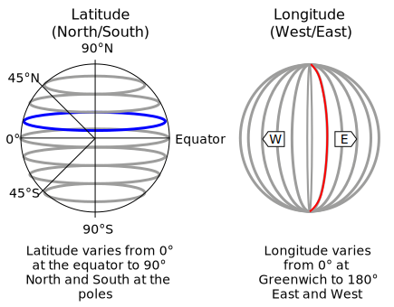
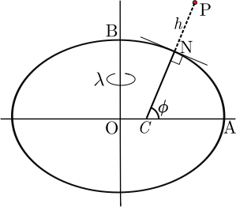

License
This work is licensed under a Creative Commons Attribution-NonCommercial-ShareAlike 4.0 International License.

This is a human-readable summary of (and not a substitute for) the license.
You are free to:
- Share — copy and redistribute the material in any medium or format
- Adapt — remix, transform, and build upon the material
However, you may not use the material for commercial purposes.
Variable types
Overview
In the context of automotive data analysis, a variable can be thought of as a (static) characteristic or a measurement that can change or vary over time. Variables can be used to describe different aspects of the environment or the vehicle itself, such as its position, speed, acceleration, size, distance, object type or colour.
Variables play a crucial role in automotive data analysis because they allow us to measure and quantify the behavior of a vehicle and its surroundings. By collecting and analyzing data on these variables, we can gain insights into how an (automated) vehicle is performing, identify critical situations, evaluate the sensor performance and finally reason about its safety.
It's important to note that variables in automotive data analysis can come in different forms, such as continuous variables (e.g., speed, size or acceleration) or categorical variables (e.g., material, colour and model of the vehicle).

Taxonomy
Categorical variables
Nominal variables are variables that have categories or labels with no inherent order or hierarchy. For example, in automotive data analysis, a nominal variable could be the make or model of a vehicle. Each vehicle belongs to a particular make and model category, but there is no inherent order or ranking between different categories.
Dichotomous variables are variables that have only two possible categories or values. For example, in automotive data analysis, a dichotomous variable could be whether a vehicle is electric or gasoline-powered. Dichotomous variables are often analyzed using binary logistic regression, which can help identify factors that are associated with the presence or absence of a particular category or value.
Ordinal variables, on the other hand, have categories or labels that can be ranked or ordered based on their relative value or magnitude. For example, in automotive data analysis, an ordinal variable could be the level of fuel efficiency of different vehicles, which can be ranked from most fuel-efficient to least fuel-efficient. Ordinal variables are analyzed using measures such as median and quartiles, which can provide insights into the central tendency and variability of the data.
Continuous variables
Another important type of variable in statistics is the continuous variable. Unlike nominal, ordinal, and dichotomous variables, which are categorical in nature, continuous variables are numerical and can take any value within a range.
Note that you can define either ordinal variables based on intervals of a single continuous variable, which can sometimes simplify an analysis or a metric.
Representation in Python
The following table gives a high level overview about the recommended representation of the above mentioned types
in Python. In addition to Python-native types included in the standard library, the table lists types used in
numpy and pandas, which is more convenient for larger analysis tasks.
Of course you can also represent a nominal variable with pre-defined float values such as [0.0, 1.0, 2.0] for "truck", "bus" and "motorcycle",
but the further data-processing and code is less efficient (e.g. float16 needs double the memory of int8), and more error prone.
In addition you would also miss mechanisms from libraries like pandas,
which prevent computing the mean() on a categorical column.
The time can be represented as a continuous variable, however there are specialized datatypes in both Python's standard lib and numpy/pandas. This enables a more convenient handling with time zones and facilitates doing algebra (e.g. computing time differences).
| Variable type | scalar | numpy 1 | pandas |
|---|---|---|---|
| Nominal | int, enum.Enum | int8 | CategoricalDtype |
| Ordinal | ìnt, enum.Enum | int8 | CategoricalDtype |
| Dichotomous | bool | bool 2 | bool |
| Continuous | float | float32, double | float32, double |
| Time | float / datetime.datetime | datetime64 | datetime64 |
Note that you can convert a continuous variable to a ordinal one using pandas.cut function.
Exercises
- Create an array of 100 uniformly distributed random numbers (0-150m) representing the measured distance from a LIDAR sensor. Categorize them in three groups, for <50m, <100m, <150m. Count the number of occurrences for each group.
- What is the most-memory efficient datatype for representing human weight? How would you represent time for a lane change manoeuvre?
References
1 Refer to the official NumPy docs for reference regarding internal representation in memory.
Time
Computers are discrete in nature - thus we need a discrete representation as a datatype. Commonly time is represented as an array of timestamps:
# 3 seconds in Vienna (Central European Time: +1:00)
[
'2009-01-01T12:00:00+01:00',
'2009-01-01T12:00:01+01:00',
'2009-01-01T12:00:02+01:00',
...
]
Timestamps can be timezone-aware or when we work only in once time-zone, without any timezone information,
e.g. 2009-01-01T12:00:00. A good practice is to convert the local timestamps into UTC (+0:00) prior
to further processing.
UTC
No matter which timezone you are in, you can always represent the time in a standardized way by using the Coordinated Universal Time or UTC.
Coordinated Universal Time or UTC is the primary time standard by which the world regulates clocks and time. UTC is used in many Internet and World Wide Web standards. The Network Time Protocol (NTP), designed to synchronise the clocks of computers over the Internet, transmits time information from the UTC system. If only milliseconds precision is needed, clients can obtain the current UTC from a number of official internet UTC servers. For sub-microsecond precision, clients can obtain the time from satellite signals.1
Unix time
Wikipedia provides a short and precise description2:
Unix time is a date and time representation widely used in computing. It measures time by the number of seconds that have elapsed since 00:00:00 UTC on 1 January 1970, the beginning of the Unix epoch, without adjustments made due to leap seconds.
That means that our initial example from Vienna turns to:
# 3 seconds in Vienna (Central European Time: +1:00)
[
3600,
3601,
3602,
...
]
The unix-time in the moment of writing (Sun Apr 16 2023 09:08:10) is 1681636090.
Timezones
To quote Wikipedia, timezones are:
A time zone is an area which observes a uniform standard time for legal, commercial and social purposes. Time zones tend to follow the boundaries between countries and their subdivisions instead of strictly following longitude, because it is convenient for areas in frequent communication to keep the same time.
To add to this definition, is that each timezone is defined by a temporal offset (in hours) relative to the Coordinated Universal Time (UTC). Timezones west to Greenwich are often negative, those to the east positive.
Some examples:
- Central European Time (CET) is defined by a positive offset (
+1:00in winter and+2:00in summer). - The Pacific Time Zone (PT) has a negative offset (
-8:00in winter and-7:00in summer). - India Standard Time (IST) has an "unround" offset
+5:30
Figure 1: Time zones of the world. Image from Wikipedia.
{kind=link}
Prior the the 19th century people were using solar time, so when it was noon in London, it is about 10 minutes before solar noon in Bristol. This variation corresponds to four minutes of time for every degree of longitude.3 You can imagine that with that system, it is not convenient to schedule meetings or public transport.
Implementation in Python
The preferred way of dealing with times is to always work in UTC, converting to localtime only when generating output to be read by humans.
In Python, you can create a datetime-aware timestamp (i.e. a timestamp with timezone description) passing a tzinfo argument. This argument should be a subclass of tzinfo - such as the timezone object:
from datetime import datetime, timedelta, timezone
# create a timestamp in Germany (Central European Summer Time +2:00)
cest_tz = datetime.timezone(datetime.timedelta(seconds=2*3600))
time = datetime.datetime(2023, 5, 14, 18, 55, tzinfo=cest_tz)
# convert to UTC:
time.astimezone(timezone.utc)
# > datetime.datetime(2023, 5, 14, 16, 55, tzinfo=datetime.timezone.utc)
Some time-zones have non-static (e.g. different in winter and summer) offsets, such as Central European (Summer) Time for daylight saving. For that cases,
consider using zoneinfo module:
import zoneinfo
berlin_tz = zoneinfo.ZoneInfo("Europe/Berlin")
time = datetime.datetime(2023, 5, 14, 18, 55, tzinfo=berlin_tz)
This code makes sure, that any conversion to UTC will produce the right result, independent of daylight time.
Relative vs. absolute timestamp
A relative timestamp represents the duration relative to the start of a recording or an event:
# 4 relative timesteps
relative_time_secs = [0.0, 0.01, 0.02, 0.03] # s
relative_time_nsecs = [0, 10, 20, 30] # ms
This representation facilitates the comparison of multiple timeseries against each other.
The relative representation can be used for represent high resolution (i.e. frequency) timestamps,
where the interval range of the int datatype is not enough to reach a particular date.
Another consideration is that many algorithm implementations require relative time starting with 0 as inputs.
References
2 Wikipedia - Unix Time (link)
3 Wikipedia - Time Zone History (link)
Basic datatypes
This chapter describes a collection of essential datatypes commonly used in the analysis technical entities such as vehicles or robots.
Point
A \( N \)-dimensional point is typically represented as a tuple of \( N \) floating point numbers:
# 3-dimensional point
p = (1.23, 342.2, 123.12)
In (geo-)spatial applications are usually used to represent a location. In general, a point can represent any entity (e.g. person in an employee) database as a tuple of its characteristics or features:
# 3-dimensional point
employee = (
31, # age [years]
5000, # monthly salary [$]
13, # time in the company [years]
)
Vector
A vector is geometric object which has a magnitude (length) and a direction.
The representation of a vector is equal to the points in the section above - you can define a vector by a tuple of \( N \) points.
Vectors are essential in technical domain. Forces, velocity, acceleration - all those terms are defined in terms of vectors:
# velocity vector of the rocket at start
v = (
0, # x [m/s]
0, # y [m/s]
7900.0, # z [m/s]
)
Lines
Line segment
In mathematics a line is an infinitely long object defined by a point and a vector. Alternatively we can define a line by two points. Since objects in our daily life are finite, we are dealing with line parts or segments, e.g. edges, sizes or paths.
A line segment can be represented with its end points \( p_0 \) and \( p_1 \). The length of the line segment is the magnitude of the direction vector \( ||\vec v ||_2 = || p_1 - p_0 ||_2 \).
Linestrings
Furthermore, multiple line segments can be combined to a polygonal chain. In computational geometry
and in many languages like Python or C#) polygonal chains are be referred to as LineStrings.
Figure 1: A linestring composed of 5 line segments. Image from Wikipedia.
{kind=link}
Curves
It is not straightforward to define a curve in a single mathematically unique manner. In the following an example definition from Wikipedia:
In mathematics, a curve (also called a curved line in older texts) is an object similar to a line, but that does not have to be straight.
Curves can have multiple representations and combinations of the those representations.
Function graphs
A curve can be represented a a function, e.g. as a polynomial \( y = f(x) = c_3 x^3 + c_2 x^2 + c_1 x + c_0 \).
Figure 2: The graph of a polynomial function of degree 3. Image from Wikipedia.
{kind=link}
Note that \( x \) is the independent variable. Defining circles in the function graph representation is not possible.
Topological path
A N-dimensional curve can be represented by its arc length \( s \in [0, 1] \) and a function in each dimension:
\[ p = \begin{bmatrix} f_x(s) \\ f_y(s) \\ f_z(s) \end{bmatrix} \]
Splines
A parametric spline is a composition of multiple topological paths, defined in a piece-wise manner.
Figure 3: A spline with 8 knots, i.e. \( s \in [0, 7] \). Each section represents a topological path. Image from Wikipedia.
{kind=link}
...
Note, that a 2D spline can be defined as a collection of multiple function graphs, where \( x \) is the independent variable. This has a more compact representation and less complex computation, but prevents to define circles or clothoids.
Clothoids (WIP)
Euler spirals ... WIP
Geometric shapes (WIP)
Circles & spheres (WIP)
Boxes & Cuboids (WIP)
Polygons & Polyhedrons (WIP)
Coordinate systems
Cartesian coordinate system
Introduction
This system is the first system we hear about in high school. First it is taught in terms of x,y-graphs where pupils enter pairs of numbers in a 2-D system. Later, we learn the term function which is can be represented graphically as a curve in this system.
A bit about history: Cartesian coordinates are named for René Descartes whose invention of them in the 17th century revolutionized mathematics by providing the first systematic link between geometry and algebra. Using the Cartesian coordinate system, geometric shapes (such as curves) can be described by equations involving the coordinates of points of the shape.1
Left- vs. right-handed
In 2-D system, the position of x and y is fixed for many people, where the y axis is usually pointed toward the north. For a 3-D system however, there are multiple definitions:
Figure 1: Left-handed coordinates on the left, right-handed coordinates on the right. Image from Wikipedia
{kind=link}
For right-handed coordinates, the right thumb points along the z-axis in the positive direction and the curling motion of the fingers of the right hand represents a motion from the first or x-axis to the second or y-axis. When viewed from the top or z-axis the system is counter-clockwise.2 Robotic applications and frameworks such as ROS, use the right hand-rule, see 3.
For left-handed coordinates, the left thumb points along the z-axis in the positive direction and the curling motion of the fingers of the left hand represent a motion from the first or x-axis to the second or y-axis. When viewed from the top or z-axis the system is clockwise.2
Spherical coordinate system
Spherical coordinate system is used across a a wide palette of applications, besides astronomy and geo-informatics, it is essential for automotive applications, too. A RADAR or LIDAR sensor output their readings by providing the range, azimuth- and elevation-angle to the object of the detection. This section provides a short overview over notation, characteristics and commonly used coordinate transformations.
A spherical coordinate system (Fig. 2) is defined over the radial distance \( r \), azimuth angle \( \varphi \) and inclination angle \( \theta \):

Figure 2: Right-handed cartesian and spherical coordinate system in ISO 80000-2:2019 convention. Image from Wikipedia, extended with \( \varepsilon \) elevation angle.
{kind=link}
The angle the \( \varepsilon = \frac \pi 2 - \theta \) is often used instead of \( \theta \) for data coming from RADAR or LIDAR sensors. When referring to field of view of a sensor, a horizontal range refers to the extent of \( \varphi \) and vertical to \( \varepsilon \).
Transformation to Cartesian
The spherical coordinates of a point in the ISO convention (i.e. for physics: radius r, inclination θ, azimuth φ) can be obtained from its Cartesian coordinates (x, y, z) by the formulae4:
\[ r = \sqrt{x^2 + y^2 + z^2} \\ \theta = \arccos\frac{z}{\sqrt{x^2 + y^2 + z^2}} \\ \varphi = sgn(y)\arccos\frac{x}{\sqrt{x^2+y^2}} \]
The sign function \( sgn(x) \) returns 1 for positive numbers \( x > 0\), 0 for \( x = 0\) and -1 for negative \( x < 0\).5
Conversely, the Cartesian coordinates may be retrieved from the spherical coordinates by4:
\[ x = r \sin\theta \, \cos\varphi \\ y = r \sin\theta \, \sin\varphi \\ z = r \cos\theta \]
Others
For geodetic and geographic coordinate systems, refer to Maps chapter.
References
1 Wikipedia - Cartesian Coordinate System, link
2 Wikipedia - Right hand rule, link
3 ROS REP103 - Standard Units of Measure and Coordinate Conventions, link
4 Wikipedia - Spherical coordinate system, link
5 Wikipedia - Sign function, link
Motivation
Foreword
Coordinate transformations are needed in the technical and industrial context for various reasons:
- Integration of components and actors: When different components or systems need to work together in a facility, it may be necessary to align their coordinate systems. This enables seamless integration and smooth exchange of information. As illustrated in the "factory of the future" example (Fig. 1), a robot perceiving a person with its sensors needs to transmit the position to other robots as a trigger for the next task or a collision warning.
- Alignment and orientation: During assembly or alignment of parts or machinery, determining their positions and orientations relative to each other is often necessary. Coordinate transformations allow measurements in one coordinate system to be transferred to another, enabling precise alignment determination.
- Machine vision, tracking and robotics: In fields such as machine vision and robotics, coordinate transformations are used to unify information from different sensors or cameras into a common coordinate system. This enables precise positioning, object detection, and decision-making. This is in particular important for autonomous vehicles perceiving its environment from multiple sensors mounted on different places and heights.
Figure 1: Factory of the Future, Image from Comau North America (source)
Through coordinate transformations, data and information can be transferred, integrated, and analyzed between different coordinate systems to understand, control, and optimize complex technical and industrial processes.
Transformation operation
In a nutshell, the core operation is to convert a point given in one coordinate system to another (Fig. 2):
Figure 2: A common use case is to convert the location (x, y) of the green point from one coordinate system (red) to another (blue)
A transformation is an operation where the initial coordinate system is moved and rotated. The "move" operation is called translation.
A transformation of a point in coordinate system B (i.e \({}^{B} \vec x\)) to the coordinate system A can be computed with a matrix multiplication in homogenous coordinates1:
\[ \begin{bmatrix} {}^{A} \vec x \\ 1 \end{bmatrix} = {}^{A}_B \mathbf T \ \begin{bmatrix} {}^{B} \vec x \\ 1 \end{bmatrix} \]
The 4x4 matrix \( {}^{A}_B \mathbf T \) is called the transformation matrix between the coordinate systems A and B.
By inverting the transformation matrix we can revert the operation:
\[ \begin{bmatrix} {}^{B} \vec x \\ 1 \end{bmatrix} = {}^{A}_B \mathbf T^{-1} \begin{bmatrix} {}^{A} \vec x \\ 1 \end{bmatrix} = {}^{B}_A \mathbf T \ \begin{bmatrix} {}^{A} \vec x \\ 1 \end{bmatrix} \]
The nomenclature describing the transformations were adapted from the great book from John Craig, Introduction to Robotics (1989)1.
Learning goals
- Know and understand the value of coordinate transformations
- Understanding the terminology and fundamental mathematical concepts
- Describe the transformation conversion mathematically and implement it
References
1 John Craig, Introduction to Robotics (1989)
Transformation tree
Overview
To transform points between multiple (moving) actors, it is essential to understand the concept of transformation trees which define the connections between coordinate systems.

Figure 1: Transformation tree for two actors with two sensors each. Each box represents a coordinate system (or frame), each arrow represents the transformation where a parent frame is pointing towards a child frame..
A transformation tree is a directed graph (Fig. 1) with nodes as coordinate systems and transformations between them as vertices. In a nutshell, it is helpful to think of the arrows as "mathematical recipes" converting points from one system to another.
The higher level system is often referred to as a parent frame, the lower level is often called the child frame..
Note that the structure of this graph remains constant over time, even if the mathematical relation between world and vehicle coordinate systems change.
Chaining transformations
Having the relations tracked in the tree diagram it is straightforward to chain transformations together. The matrix notation allows an computationally efficient transformation between multiple coordinate frames, since we can combine multiple transformations into one matrix (Eq. 2.40 from 1):
\[ {}^{A}_C \mathbf T = {}^{A}_B \mathbf T \ {}^{B}_C \mathbf T \]
Applied to the diagram from Fig. 1 this formulation allows us to transform between world and sensor coordinate system with a single operation \(\mathbf T_{world \rightarrow robot0-sensorA}\).
References
1 John Craig, Introduction to Robotics (1989)
Transformation matrix
In this section we decompose the matrix \( {}^{A}_B T\) into its two main components: translation and rotation.
The transformation between two coordinate systems \(A, B\) can be represented as a 4x4 matrix in homogenous coordinates:
\[ \begin{bmatrix} {}^{A} \vec x \\ 1 \end{bmatrix} = {}^{A}_B \mathbf T \ \begin{bmatrix} {}^{B} \vec x \\ 1 \end{bmatrix} \\ \begin{bmatrix} {}^{A} \vec x \\ 1 \end{bmatrix} = \begin{bmatrix} {}^{A}_B R & {}^{A}t_B \\ \mathbf 0 & 1 \end{bmatrix} \begin{bmatrix} {}^{B} \vec x \\ 1 \end{bmatrix} \]
Note that \( \mathbf 0 = [0, 0, 0]\), i.e. a 3x1 row vector.
The transformation matrix \( {}^{A}_B T\) has two core components (Fig. 1):
- a 3x1 displacement vector \( {}^{A}t_B \), which describes the translation of \(B\)'s origin in the \(A\) system. For a sensor mounted 5m in x-axis direction from the point of reference, the displacement vector is \( [5, 0, 0]^T\).
- a 3x3 rotation matrix \({}^{A}_B R\), which describes the rotation of the axes of coordinate system \(B\) in the \(A\). I.e. the columns are formed from the three unit vectors of B's axes in A: \({}^{A}\vec X_B\), \({}^{A}\vec Y_B\), and \({}^{A}\vec Z_B\).1
Figure 1: Coordinate transformation matrix composed from displacement vector \( {}^{A}t_B \) (red) and rotation matrix \({}^{A}_B R\) (blue).
In the next section we will learn how the rotation matrix is composed.
References
1 ROS Overview - Transformations (source)
Rotation
As outlined in previos sections, a transformation is a combination of translation and rotation. In this section, the rotation part will be discussed.
In geometry, various formalisms exist to express a rotation in three dimensions as a mathematical transformation.1 Some examples:
- Rotation matrices
- Euler axis and angle
- Euler rotations
- Quarternions
In general, according to Euler's rotation theorem the rotation of a rigid body (or three-dimensional coordinate system with the fixed origin) is described by a single rotation about some axis. Such a rotation may be uniquely described by a minimum of three real parameters.1
Rotation formalisms
Rotation matrix
A 3x3 rotation matrix \({}^{A}_B R\) describes the rotation of the axes of coordinate system \(B\) relative to system \(A\).
The columns are formed from the three unit vectors of B's axes expressed in A: \({}^{A}\vec X_B\), \({}^{A}\vec Y_B\), and \({}^{A}\vec Z_B\).2
\[ {}^{A}_B R = \begin{bmatrix} {}^{A}\vec X_B & {}^{A}\vec Y_B & {}^{A}\vec Z_B \end{bmatrix} \]
An illustration of the 2-dimensional case can be found in Fig. 1. The unit vectors of the system B are expressed as vectors in system A:
\[ {}^{A}_B R = \begin{bmatrix} {}^{A}\vec X_B & {}^{A}\vec Y_B \end{bmatrix} = \begin{bmatrix} \cos \theta & -\sin \theta \\ \sin \theta & \cos \theta \end{bmatrix} \]

Figure 1: 2D rotation with a rotation angle \(\theta \)
\[ {}^{A}x = {}^{A}_B R \ {}^{B}x \]
Euler axis and angle
According to Euler's rotation theorem the rotation of a rigid body (or three-dimensional coordinate system with the fixed origin) is described by a single rotation about some axis. Such a rotation may be uniquely described by a minimum of three real parameters.1

Figure 2: A visualization of a rotation represented by an Euler axis and angle. Image from 1
Euler rotations
The idea behind Euler rotations is to split the complete rotation of the coordinate system into three simpler constitutive rotations. That means, we can define a rotation by a chain of rotation axis and angels. The Euler rotations or Euler angles are also referred to as Davenport angles.
There are two groups, based on the order of the rotation axis:
- Generalized (classical) Euler rotations: \( zxz, xyx, yzy, zyz, xzx, yxy \)
- Generalized Tait–Bryan rotations: \( xyz, yzx, zxy, xzy, zyx, yxz \)
E.g. \( zxz \) is a rotation on the z-axis, followed by x and again z.
Note, that there is difference whether the rotation is applied intrinsically (i.e. the rotated axes is a starting point for the next rotation) or extrinsically (all the rotations are applied wrt. initial coordinates).
Note, that there are 24 (=2x(6+6)) ways in total to define a rotation.
Any extrinsic rotation is equivalent to an intrinsic rotation by the same angles but with inverted order of elemental rotations, and vice versa. For instance, the intrinsic rotations x-y-z by angles α, β, γ are equivalent to the extrinsic rotations z-y-x by angles γ, β, α.3 Both are represented by a rotation matrix R:
\[ R = R_x(\alpha) \ R_y(\beta) \ R_z(\gamma) \]
The formulas for the basic rotations (e.g. \( R_x(\alpha) \)) can be found here.
Quaternions
A quaternion representation of rotation is written as a versor (normalized quaternion):
\[ \hat{\mathbf{q}} =q_i\mathbf{i}+q_j\mathbf{j}+q_k\mathbf{k}+q_r = \begin{bmatrix} q_i \\ q_j \\ q_k \\ w \end{bmatrix} \]
A unit quaternion \(\mathbf q\) holds the information about the rotation axis \( [a_x, a_y, a_z]^T \) and the rotation angle \(\alpha\) (similar to Euler axis and angle representation):
\[ \mathbf q = sin(\frac \alpha 2) (a_x i + a_y j + a_z k) + cos(\frac \alpha 2) \\ q_i = sin(\frac \alpha 2) a_x i \\ q_j = sin(\frac \alpha 2) a_y j \\ q_k = sin(\frac \alpha 2) a_z k \\ w = cos(\frac \alpha 2) \]
Quaternions, which form a four-dimensional vector space, have proven very useful in representing & transmitting rotations due to several advantages over the other representations mentioned above.1 Quaternions are a very popular parametrization due to the following properties1:
- More compact than the matrix representation (=less data to transmit and hold in memory) and less susceptible to round-off errors
- Expression of the rotation matrix in terms of quaternion parameters involves no trigonometric functions (refer here) (=sin & cosinus are compute heavy)
- It is simple to combine two individual rotations represented as quaternions using a quaternion product
References
1 Wikipedia - Rotation formalisms in three dimensions
3 Wikipedia - https://en.wikipedia.org/wiki/Davenport_chained_rotations
Transformations over time
Implementation in Python
The concepts mentioned above and the conversions between various systems (together with a TF-tree) are implemented in pytransform3d:
# from: https://github.com/dfki-ric/pytransform3d#example
import numpy as np
import matplotlib.pyplot as plt
from pytransform3d import rotations as pr
from pytransform3d import transformations as pt
from pytransform3d.transform_manager import TransformManager
rng = np.random.default_rng(0)
ee2robot = pt.transform_from_pq(
np.hstack((np.array([0.4, -0.3, 0.5]),
pr.random_quaternion(rng))))
cam2robot = pt.transform_from_pq(
np.hstack((np.array([0.0, 0.0, 0.8]), pr.q_id)))
object2cam = pt.transform_from(
pr.active_matrix_from_intrinsic_euler_xyz(np.array([0.0, 0.0, -0.5])),
np.array([0.5, 0.1, 0.1]))
tm = TransformManager() # holds the TF tree
tm.add_transform("end-effector", "robot", ee2robot)
tm.add_transform("camera", "robot", cam2robot)
tm.add_transform("object", "camera", object2cam)
# holds the final transform matrix
ee2object = tm.get_transform("end-effector", "object")
References
1 Wikipedia - Rotation formalisms in three dimensions
2 Wikipedia - https://en.wikipedia.org/wiki/Davenport_chained_rotations
Data representation
This chapter gives a rough overview of data formats often used in automotive industry for recordings, analysis and exchange.
Taxonomy
Record vs. column based
In a column-wise representation, each column of data is stored together, such that all the values for a given attribute (e.g., age, name, address) are stored in the same column. This can be useful for analysis, as it allows for easy aggregation and filtering of data based on specific attributes.
In contrast, in a record-wise representation, each row of data is stored together, such that all the attributes for a given entity (e.g., person, product, transaction) are stored in the same row. This can be useful for viewing and editing individual records, as all the information about a given entity is presented together in one place.
A good discussion about the representation can be found on StackOverflow.
Character-based vs. binary
Character based formats, represent the data as ASCII characters, so they can directly interpreted by humans in a text editor.
Contrary to that, a binary type cannot be opened in a text editor and interpreted by a human due to binary representation of the numbers (instead of characters in ASCII) and in some cases applied compression.
Character-based formats
CSV
CSV stands for "Comma-Separated Values", and it is a simple file format used to store tabular data (data organized in rows and columns).
In a CSV file, each row represents a record, and each column represents a field. Fields are separated by a delimiter, most commonly a comma (hence the name). However, other delimiters such as semicolons or tabs can also be used.
The first row of a CSV file often contains the names of the fields (also called headers), while the subsequent rows contain the actual data.
time_ms, object_id, x, y, z
1678554731011, 40, 74.2, 3.51, -0.03
1678554731011, 42, 69.2, 0.12, 0.02
1678554731022, 40, 73.6, 3.48, 0.022
1678554731022, 42, 73.8, -0.15, -0.031
...
CSV files are commonly used to exchange data between different software applications because they are simple and easy to read and write. A big advantage of them is being easily readable by a human for short plausibility checks. In parallel computing, the line-delimited structure allows an easier distribution to multiple computing threads (e.g. CPU-cores, processors, virtual machines).
However, they have some limitations, such as being memory intensive (a number 1678554731022 has to be represented with 13 bytes with a byte per character.) By nature, since CSV represents tabular data, it is not able to represent complex data structures such as graphs or list of lists.
Also, containing special characters (without encoding information from the author) that can cause issues when importing or exporting data.
JSON
JSON stands for "JavaScript Object Notation", and it is a lightweight data interchange format used to store and exchange structured data between different software applications. In a JSON file, data is represented as key-value pairs {"key": value} or as an ordered list of values. JSON is based on a subset of the JavaScript programming language syntax but is independent of any programming language.
JSON files use a simple and intuitive syntax that is easy for humans to read and write. JSON files consist of objects enclosed in curly braces {} and arrays enclosed in square brackets []. An object contains a set of key-value pairs, while an array contains an ordered list of values:
{
"records": [
{
"time_ms": 1678554731011,
"objects": [
{"id": 40, "x": 74.2, "y": 3.51, "z": -0.03},
{"id": 42, "x": 69.2, "y": 0.12, "z": 0.02}
]
},
{
"time_ms": 1678554731022,
"objects": [
{"id": 40, "x": 73.6, "y": 3.48, "z": 0.022},
...
]
},
]
}
JSON files are commonly used in Web-technology to transmit data between a server and a web application, but they can also be used to store configuration data or other structured data types. It is supported by most modern programming languages and can be easily parsed and generated using libraries or built-in functions.
Although JSON has many advantages, it also has some disadvantages:
-
Limited data types: JSON supports only a limited set of data types, such as strings, numbers, boolean values, and null. This means that more complex data structures, such as dates or binary data, need to be encoded or decoded using workarounds.
-
Large file sizes: In some cases, JSON files can be larger than other data formats, such as CSV, because of its verbose nature. This can lead to slower data transfers or larger loading times.
A notable extension of JSON is JSONL, which stands for Line delimited JSON, where each line represents a single record (e.g. point in time).
XML, YAML, INI, .env ...
There are many other formats used in web & OS technology and are still existing in many software tools used in automotive industry.
Often they do not hold large arrays of data such hour long recordings with many variable, rather they are used as configuration files. There are some advantages and disadvantages compared to JSON, such as schema checks for XML or support for comments in YAML and .env files.
When you design a complex system with external configuration, consider your stakeholders (users, consumers) and software interacting with your system in your choice.
Binary formats
Binary formats have multiple advantages over text-based formats. In addition to the memory efficiency (i.e. floating point number as a 64-bit vs. multiple ASCII characters), the values binary formats store are often typed, means there is only one way to store and interpret for client applications. This allows a more robust data-exchange and data management.
Spreadsheet formats (xlsx, odt)
TODO
ASAM MDF
MDF (Measurement Data Format) is a binary file format to store recorded or calculated data for post-measurement processing, off-line evaluation or long-term storage. The format has become a de-facto standard for measurement & calibration systems (MC-systems), but is also used in many other application areas.
Parquet
Apache Parquet is a free and open-source column-oriented data storage format coming from the Apache Hadoop ecosystem1.
The values in each column are stored in contiguous memory locations, providing the following benefits1:
- Column-wise compression is efficient in storage space2
- Encoding and compression techniques specific to the type of data in each column can be used
- Queries that fetch specific column values need not read the entire row, thus improving performance
Protobuf (WIP)
ROS messages (WIP)
Avro (WIP)
Avro is a row-based storage format for Hadoop.
Custom (WIP)
Proprietary binary formats ...
References
1 Wikipedia Apache Parquet, link 2 Apache Parquet - File Format link
Interpolation
Motivation
Interpolation (Latin for inter = between and polire = smoothing) is an essential technique for processing numerical data in the engineering domain. Sensor output recorded over time as time-series usually requires interpolation to reduce the data amount, deal with missing values or as a first step prior to the merge with a another data source.
Mathematically, given a list of \(N\) pairs \( (x_i, f_i) \ \forall i \in 0 \dots N-1 \) (often generated by an unknown function or process \(f(x)\)), we are interested in the intermediate values (i..e \( x_* \)) which are not equal to any of \( x_i \). Those values are often referred as query points. Usually, the list is sorted by \( x \) in ascending manner.

Figure 1: Interpolation problem visualized.
In case we are interested in values of \( x < x_0 \) or \( x > x_{N-1} \) we talk about extrapolation.
Note, that the argument \( x \) can also be time \( t \), in that case we speak about temporal interpolation. Additionally, in this overview we mainly look at the one-dimensional (1D) case, more details on more dimensions can be found in the section below.
There are multiple approaches to interpolate between known data points, which will be categorized and explained in the following sections.
Methods
Across next section, we will introduce three approach families, the first two are separated by the number of points they use for the approximation of intermediate values. The first category are the proximity-based methods, which take one or two sample points into account. The second category take more then two points into account and will be called global, because they also consider values outside the close proximity. The third family is called application-specific, since some applications require a special consideration when dealing with intermediate values.
Proximity-based
The proximity can be defined based on the numerical distance to the sample points (nearest-neighbour), or based on the position wrt to sample points. The algorithms in the proximity based method family select the value of the nearest point and does not consider the values of neighbouring points at all

Figure 2: Proximity based interpolation methods. Altered version of 1
Nearest-Neighbour
Yielding a piecewise-constant interpolant around a single point. The algorithm is very simple to implement and is commonly used. (https://en.wikipedia.org/wiki/Nearest-neighbor_interpolation)
Previous/Next
In some applications however, especially those dealing with time-series, taking the nearest sample means taking values in the future, which is not always suited. Therefore variation forward-fill ``ffill` exist, where \( f_i \) is true for all \( x \in [x_i, x_{i+1}[ \).
The opposite, backward-fill, where \( f_{i+1} \) is true for all \( x \in [x_i, x_{i+1}[ \) is often used for XYZ.
Linear
Linear interpolation assumes a linear relationship between two sample points, i.e.
\[ f(x) = ax +b = \frac{f_{i+1}- f_{i}}{x_{i+1}- xf_{i}} + f_{i} \ \forall x \in [x_i, x_{i+1}[ \]
Global
Global methods take into account more than two points around the query location \( x_* \). Some methods even take into account all available points.

Figure 3: Global interpolation methods. Images taken from Wikipedia.
Polynomial
A \(n\)-degree polynomial \( p(x) = c_n x^n + c_{n-1} x^{n-1} + \dots + c_0 \) is fitted to multiple points around the query \( x_* \). Mathematically, we can use regression techniques to find the coefficients \( c_j \) or compute an exact solution taking \( n+1 \) points.
Spline
Similar to linear interpolation which uses a linear function for each of intervals \( [x_i, x_{i+1}] \), spline interpolation uses low-degree polynomials in each of the intervals, and chooses the polynomial pieces such that they fit smoothly together. The resulting function is called a spline.
The fitting smoothly requirement is ensured via mathematical constrains to the derivatives, such as \( p_i'(x_i) = p_{i+1}'(x_i) \land p_i''(x_i) = p_{i+1}''(x_i) \) 2
This property can be helpful when interpolating physical quantities, where changes happen smoothly.
Regression
Instead of taking a \(n\)-degree polynomial, we could potentially use any parametrical function and fit the data to it. One interesting method is the Gaussian-Process Regression, an machine learning, where in addition to the interpolated function value \(f_*\) the uncertainty estimate is computed.
Aggregation
For cases where the array of query points \( x_* \) have lower temporal frequency than the sample points, i.e. between each query point there are multiple sample points, statistical metrics such as arithmetic mean, median or \(p\)-percentile can be computed.
The following equation computes the average aggregation for query points \( x_* \) with a sampling distance \( S \) between each other.
\[ f_* = avg( x_* ) = \frac 1 N \sum_{x_i \in [x_* - \frac{s}{2}, x_* + \frac{s}{2}]} f_i \]
The aggregation takes all sample points which fall in the interval \( \pm S \) and takes the average of the function values.
This interpolation technique can have multiple purposes: mean or median can be used for summarizing noisy measurements in timeseries data. Aggregations such as min, max or percentile allow emphasizing on critical values, such as potholes while sampling the road surface.
Application-specific
For some applications assuming a polynomial or linear function is not enough. For physical systems and noisy data, Kalman Filter3 can be used for estimating intermediate values. To apply the Kalman filter, we need a mathematical state-space equation system describing the physics behind the temporal dynamics and the relationship to the measurement. This methodology is also called Kalman Smoothing4.
An alternative, statistical, method is to use Gaussian Process Regression. In addition to the function value \( f_* \) we can compute an uncertainty estimate \( \sigma_* \).
When dealing with transformations between coordinate systems, represented as quaternion, a method called SLERP is used, assuming rotation with uniform angular velocity around a fixed rotation axis.5
Implementation
A majority of mentioned neighborhood- and global methods are implemented within the pandas.DataFrame.resample functionality.
See here for an overview of available methods.
For some of the methods, such as splines or polynomial interpolation, pandas falls back to scipy's interpolate functionality.
One of them is scipy.interpolate.interp1d (source).
Dimensionality
WIP
References
1 By Cmglee - Own work, CC BY-SA 4.0, link
2 Wikipedia: Spline Interpolation
4 Wikipedia: Kalman Filter - Fixed-lag smoother
Merging datasets
Motivation
Merging two time series datasets with varying sampling frequencies can be a complex and challenging task, yet it is a common problem in many fields such as finance, economics, and engineering. Time series data refers to a sequence of observations taken at regular intervals over time. However, in real-world scenarios, it is not uncommon to have two or more time series datasets collected at different sampling frequencies (as in Fig. 1), making it difficult to combine them into a single dataset for analysis.
The problem of merging time series data with varying sampling frequencies arises because the data points in each dataset are not necessarily aligned, leading to gaps or overlapping time periods. To merge such datasets, we need to decide how to handle these gaps and overlaps while preserving the integrity of the data. Moreover, merging time series datasets requires careful consideration of the data quality, accuracy, and completeness, as well as the statistical properties of the data.
In this chapter we will deal with merging of multiple datasets with varying sample frequencies into one dataset with a predefined frequency \( f_C \) which can be used for further investigation or analysis.

Figure 1: Illustration of the merging problem discussed in this chapter. Dataset \( \mathbf A \) with \( N \) columns is sampled with a a frequency of \( f_A = 1 Hz \). Dataset \( \mathbf B \) (\( M \) columns) which covers similar time period, is sampled with \( f_B = 4 Hz \). The goal is to create a dataset C with a predefined frequency \( f_C \) which contains the information from the columns of the source datasets.
Methodology
We can solve the above mentioned problem by applying the following three steps:
- Decide about the target frequency \( f_C \)
- Interpolate (Up/Downsample the data), decide for each column individually
- Join the data by time
In the subsequent sections, we will discuss some details crucial for each step.
Choice of the target frequency
Instead of randomly selecting one of the frequencies \( f_A \) or \( f_B \) we can base our decision on following criteria:
- Information loss: Especially when working with high frequency data such as sound waves or road oscillations, you want to keep the information contained in the signal. As Nyquist–Shannon sampling theorem states, in order to capture information from a signal represented in a specific frequency band, you need to sample the data at least twice this frequency.1 For an periodic bump in the road happening each \( d = 10m \) with our vehicle driving \( v_0 = 33.3 \frac m s = 120 \frac{km}{h} \), we need to sample higher than \( f_{C, min} = 2 \frac{v_0}{d} = 6.6 Hz \).
- Computational resources: depending on the computation capacity of your machine or cluster of machines, you may consider a smaller target frequency to fit the data into memory or to limit the time needed for a computation.
- Consumer applications: depending on your use-case with the merged dataset, you may want to decrease or increase the frequency - usually reporting applications use a smaller frequency as those used for video rendering where a frequency of min 30fps is desired
Interpolation
As discussed in the Interpolation chapter, you need to decide for a suited interpolation method. A good first choice for physical signals is the linear, for categorical signals nearest-neighbor interpolation method.
In the context of perception and object tracking (as discussed in chapter TODO), you have to interpolate for each object ID individually. Interpolation without that consideration may lead to data loss, since the perception often tracks multiple objects at the same point in time.
Join the data
Having both datasets A and B with the same time-stamps as indices we can apply a JOIN-like operation. Here we can to decide for LEFT, RIGHT or INNER-join depending on the application and use case:
-
INNER: returns records when there is a match in both tables. -
LEFT: returns all records from the left table, even if there are no matches in the right table. -
RIGHT: returns all records from the right table, even if there are no matches in the left table.
For the latter two cases, note that the columns of the missing records will be filled with placeholder value such as NaN (not a number).
Implementation
The pandas library provides an extensive set of functions for resampling, grouping (by ID for object-lists) and joining the data:
- resampling:
pd.DataFrame.asfreq,pd.DataFrame.resample - joining:
pd.merge,pd.DataFrame.join - grouping:
pd.DataFrame.groupby
In addition, combined functions exist, such as pd.merge_asof which combines both the resampling and joining in one operation.
# we assume both dataframes have a datetime-index
# the resampling is done to the floor of 10ms
df_a = df_a.resample('10ms').interpolate('linear')
df_b = df_b.resample('10ms').nearest()
df_c = df_a.join(df_b, how='left')
References
1 Wikipedia - Nyquist–Shannon sampling theorem (link)
Overview
Perception is the process by which robots are able to gather and interpret data from their environment using sensors and algorithms. Perception is a crucial component of robotics, as it allows robots to understand and respond to their surroundings, enabling them to perform tasks autonomously and interact with humans and other machines.
Robotics perception involves the use of a wide range of sensors, including cameras, LIDAR, RADAR, and other types of sensors that allow robots to detect and interpret visual, auditory, and tactile information. By processing and combining this heterogenous sensory data using advanced algorithms, robots can determine the location and orientation of objects in their environment, identify and track moving objects, and detect obstacles and other potential hazards. The outputs can be summarized as environment model which is a set of one or multiple representations (Fig. 1).

Figure 1: Simplified perception overview with multiple sensor modalities combined together to an environment model. The output is used by the planning stack. (Source: CARIAD1)
One of the key challenges in robotics perception is developing algorithms that are capable of interpreting the complex and often ambiguous data generated by these sensors. This requires sophisticated machine learning techniques, including computer vision and neural networks. Furthermore, those algorithms shall run on embedded hardware, which often less compute than a consumer grade computer.
Sensor data
In the majority of cases, a sensor device has its own signal processing unit, it provides the tracked objects as lists of coordinates and sizes as an object list:
[
Object(id=12, x=100.2, y=-5.2, z=0.4,
width=2.1, length=5.1, height=1.4, lifetime=10.2),
Object(id=42,x=110.5, y=6.7, z=0.31,
width=2.2, length=4.9, height=1.6, lifetime=0.0),
...
]
The goal of the sensor fusion is to combine multiple (per sensor) object lists from multiple sensors to a single, global object list.
References
1 CARIAD - How to reach higher automation levels with AI-based sensor fusion? (link)
RADAR
Overview
Radar sensors are electronic devices that use radio waves to detect and locate objects in their surroundings. The term "radar" stands for "radio detection and ranging," and the technology has been in use for many years in a variety of applications, from military defense to weather forecasting and air traffic control.

Figure 1: Automotive-grade RADAR sensor (Source: Bosch1)
In robotics, radar sensors are typically used to provide information about the robot's environment, such as the location and movement of nearby objects. The sensors emit radio waves, which bounce off nearby objects and are then detected by the sensor. By measuring the time it takes for the waves to bounce back, the sensor can determine the distance to the object.
One of the key advantages of radar sensors is that they are able to operate in a wide range of environments and weather conditions, including rain, fog, and snow. This makes them particularly useful in outdoor applications, such as autonomous vehicles1 and drones.
Radar equation
In order to be detected by the radar sensor system, every object, regardless of the method used, must reflect the emitted waves of wavelength \(\lambda \). The reflected power \(P_r \) (received) is described by the radar equation2:
\[ P_r = \frac{P_t G_t G_r \lambda^2 \sigma}{(4 \pi)^3 R^4} \]
The largest impact on the reflected power is the distance \(R\) between the antenna and the target. Thus there are limits on the maximum detectable (visible) distance given by the radar hardware. Typical (automotive) radar sensors provide a range of 200m.13
The characteristic of the particular target is described with the radar cross section (RCS) σ which is range-independent. It has units of area (m2, dBsm or dBm2) and is a measure of its "visibility" or size as seen by the radar2. Higher values indicate high reflectivity.
In order to work with radar data it is helpful to know the typical RCS ranges for different targets in various orientations. Typically, we can expect a range from −10dBm² to 25dBm² in a highway environment.
Doppler effect (WIP)
FMCW Radar (WIP)

Figure 2: CW Radar (Source: Wikipedia4)

Figure 3: Range-Doppler matrix with 3 moving targets. (Source: Mathworks)
References
1 Robert Bosch GmbH - Front Radar Sensor (link)
2 Merrill I. Skolnik. Introduction to radar systems. McGraw-Hill electrical engineering series. 2001
3 Continental - Advanced Radar Sensor – ARS510 (link)
4 Wikipedia Continuous-wave radar (link)
LIDAR
Sensor Fusion
Fusion Architectures
Fundamentals
This chapter provides a high level overview about the mathematical description of the Earth.
Geographic coordinates
In order to communicate locations geographic coordinates on our planet, a pair of latitude and longitude are used (Fig. 1).

Figure 1: Geographic coordinates overview with parallels (blue) and meridians (red). The prime meridian (longitude 0°) intersects Greenwich, United Kingdom. Edited Image from: Wikipedia
Note, that the pair of coordinates is usually reported with longitude first in geographic software applications and tools, since east-west looks like an x coordinate.1
Geoid
An important concept to understand is that, the Earth's surface is irregular. Its surface can be described with a geoid, defined as the shape of the surface of the earth if it were completely covered with water (Fig. 1).1
The models taught in school, like Earth being a sphere or a ellipsoid (obtained by rotating an ellipse about one of its principal axes) are sufficient to explain many things like movement of the planets, sunrise, horizon etc.
Fig. 2 shows an exaggerated shape of the Earth with vertical scaling of the heights and lows.

Figure 2: Earth geoid model (Source: DJI)
The study of the Earth’s surface (i.e. geoid) is called geodesy.
In order to deal with the complex shape mathematically, geodetic systems or geodetic datums are introduced.
Geodetic datum
A geodetic datum is a reference coordinate system, describing the Earth's geoid as a 3-dimensional mathematical shape (e.g. sphere or ellipsoid).
In Wikipedia, it is defined as following2:
A geodetic datum [...] is a reference frame for precisely representing the position of locations on Earth or other planetary bodies by means of geodetic coordinates.
In Fig. 3 the ellipsoid from the widely used 1984 World Geodetic System (WGS84) is visualized. The coordinate origin of WGS84 is meant to be located at the Earth's center of mass; the uncertainty is believed to be less than 2 cm. Modern navigation systems based on GPS use WGS84.3

Figure 3: 1984 World Geodetic System Ellipsoid with Equatorial (a), polar (b) and mean Earth radii.2
Other satellite navigation systems, such as Galileo (European Union) or GLONASS (Russia) use other geodetic datums such as Galileo Terrestrial Reference Frame (GTRF) or Parametry Zemli 1990 (Parameters of the Earth 1990) (PZ-90) respectively.4
In the Fig. 4 the definition of geographic coordinates on a geodetic datum is visualized. Note that the latitude \( \phi \) is defined by the equatorial plane and a line that is normal to the reference ellipsoid.

Figure 4: Geodetic coordinates: longitude \( \lambda \), latitude \( \phi \) and altitude \( h \).5
Contrary to the geodetic latitude (Fig. 4), the geocentric latitude is the angle between the equatorial plane and the radius from the centre to a point of interest. On its own, the term "latitude" normally refers to the geodetic latitude.6
Note, that in some applications and countries, different geodetic datums can be used. For example, cartographers in Europe may use European Datum 1950 (ED50) whereas US-counterparts use North American Datum 1927 (NAD27) which approximates the USA better. See Fig. 5 for a visual explanation.

Figure 5: Depending of the area of interest, different datums may be used. NAD27 approximates the left side of the geoid with a smaller error than ED50. Contrary to that, the right side is better modeled by ED50. Image source
Earth-centered, Earth-fixed coordinate system (ECEF)
As with any spatial reference system, ECEF consists of an abstract coordinate system (in this case, a conventional three-dimensional right-handed system), and a geodetic datum that binds the coordinate system to actual locations on the Earth.7

Figure 6: Earth-centered, Earth-fixed coordinate system together with geodetic coordinates. Image from 7
The ECEF coordinate system has the following parameters:
- The origin at the center of the chosen ellipsoid. In WGS84, this is center of mass of the Earth.
- The Z axis is the line between the North and South Poles, with positive values increasing northward.
- The X axis is in the plane of the equator, passing through the origin and extending from 180° longitude (negative) to the prime meridian (positive)
- The Y axis is also in the plane of the equator, passing through extending from 90°W longitude (negative) to 90°E longitude (positive)
Conversion ECEF ↔ Geodetic
Given geodetic coordinates (longitude \( \lambda \), latitude \( \phi \) and altitude \( h \)), one can compute the metric ECEF coordinates of the point as follows5:
\[ X = (N + h) \cos{\phi} \cos{\lambda} \\ Y = (N + h) \cos{\phi}\sin{\lambda} \\ Z = (\frac{b^2}{a^2} N + h) \sin{\phi} \]
where \( a, b \) are the equatorial radius (semi-major axis) and the polar radius (semi-minor axis), respectively. N is the prime vertical radius of curvature, function of latitude \( \phi \):
\[ N = \frac{a^2}{\sqrt{a^2 \cos^2 \phi + b^2 \sin^2 \phi}} \]
Those equations are implemented in pyproj:
import pyproj
ecef = pyproj.Proj(proj='geocent', ellps='WGS84', datum='WGS84')
lla = pyproj.Proj(proj='latlong', ellps='WGS84', datum='WGS84')
# convert (WGS84 -> ECEF)
x, y, z = pyproj.transform(lla, ecef, lon, lat, alt, radians=False)
# convert (ECEF -> WGS84)
lon, lat, alt = pyproj.transform(ecef, lla, x, y, z, radians=False)
Local east, north, up (ENU) coordinates
In many targeting and tracking applications the local East, North, Up (ENU) Cartesian coordinate system (Fig. 7) is far more intuitive and practical than ECEF or Geodetic coordinates. The local ENU coordinates are formed from a plane tangent to the Earth's surface fixed to a specific location and hence it is sometimes known as a "Local Tangent" or "local geodetic" plane. By convention the east axis is labeled x, the north y and the up z.8

Figure 7: The east north up (ENU) system together with ECEF and geodetic coordinates.7
In Python, the transformation between geodetic and ENU coordinates is implemented in pymap3d library (docs):
import pymap3d as pm
# ENU coordinate origin (Zermatt, Switzerland)
lat0 = 46.017 # deg
lon0 = 7.750 # deg
h0 = 1673 # meters
# The point of interest
lat = 45.976 # deg
lon = 7.658 # deg
h = 4531 # meters
# by default uses the ellipsoid from WGS-84
pm.geodetic2enu(lat, lon, h, lat0, lon0, h0)
# returns: (-7134.757195979863, -4556.321513844541, 2852.3904239436915)
In MATLAB, geodetic2enu function (docs) can be used.
References
1 Peter Anthamatten - How to Make Maps, An Introduction to Theory and Practice of Cartography (2021)
2 https://en.wikipedia.org/wiki/Geodetic_datum
3 Wikipedia - World GeoDetic System https://en.wikipedia.org/wiki/World_Geodetic_System
4 Reference Frames in GNSS https://gssc.esa.int/navipedia/index.php/Reference_Frames_in_GNSS
5 Wikipedia - Geodetic coordinates https://en.wikipedia.org/wiki/Geodetic_coordinates
6 Wikipedia - Latitude https://en.wikipedia.org/wiki/Latitude
7 Wikipedia - Earth-centered, Earth-fixed coordinate system https://en.wikipedia.org/wiki/Earth-centered,_Earth-fixed_coordinate_system
8 Wikipedia - Local tangent plane coordinates https://en.wikipedia.org/wiki/Local_tangent_plane_coordinates
GPS
WIP
Projections
Spatial Indexing
WIP